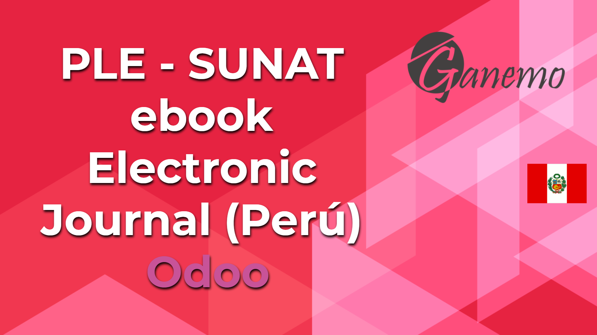

<section class="oe_container oe_dark">
    <div class="row">
        <div class="col-sm-12">
            
        </div>
        <div class="oe_span8">
            <span>It generates the electronic journal that is mandatory for companies that must keep complete accounting in Peru.
            It is very easy, Odoo generates the .txt ready to download and present to SUNAT through the electronic book program (PLE).</span>
        </div>
    </div>
</section>